- Motivation und Ziel der Arbeit
- Vorführung des Editors
- Architektur
- Fazit und Diskussion
Your browser doesn't support the features required by impress.js, so you are presented with a simplified version of this presentation.
For the best experience please use the latest Chrome, Safari or Firefox browser.
Entwicklung eines grafischen Editors zur Modellierung
Markus Neubauer
Elmar Schug
Bei der Entwicklung von Werkzeugen muss dies ausgeglichen werden.
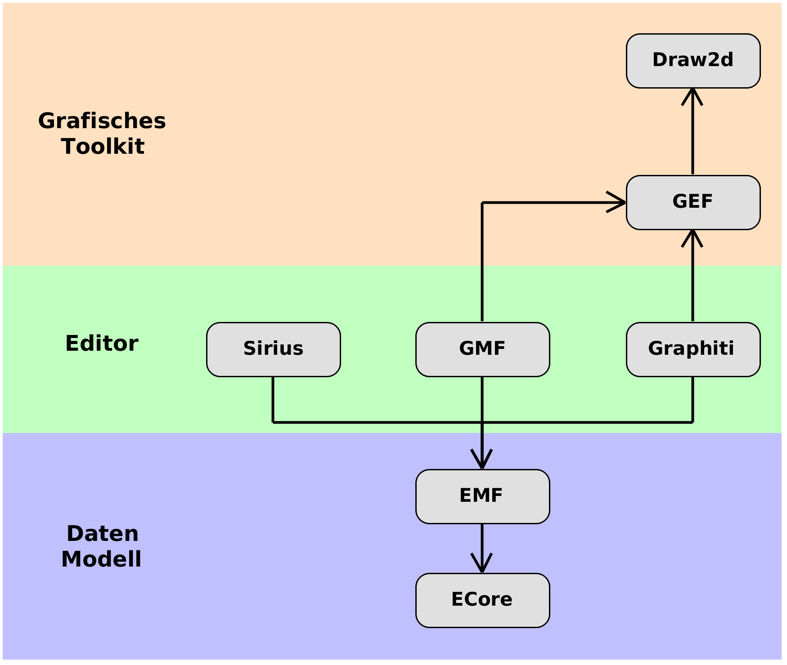
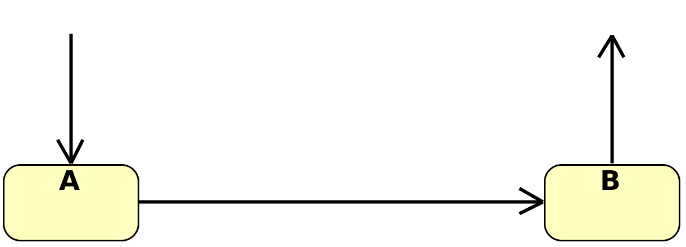
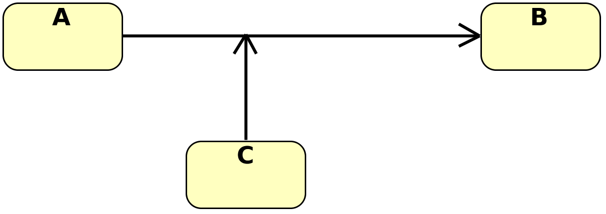
Entwicklung einer flexiblen, einfachen und leichtgewichtigen Alternative zur Eclipse-basierten Herangehensweise.
XML-Dialekt, um eine grafische Oberflächen zu beschreiben.
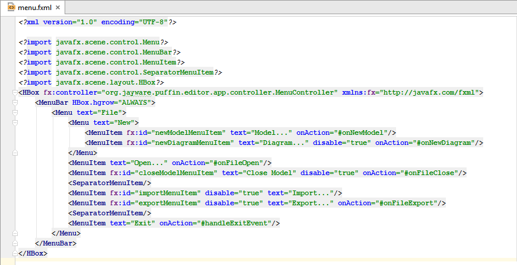Komposition an Stelle von Vererbung
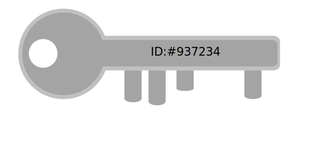
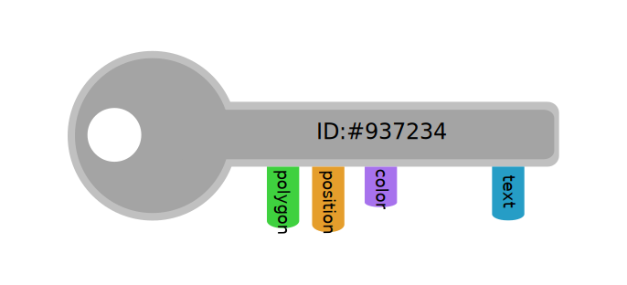
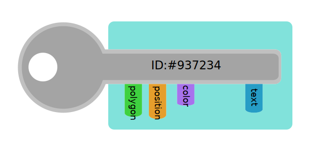
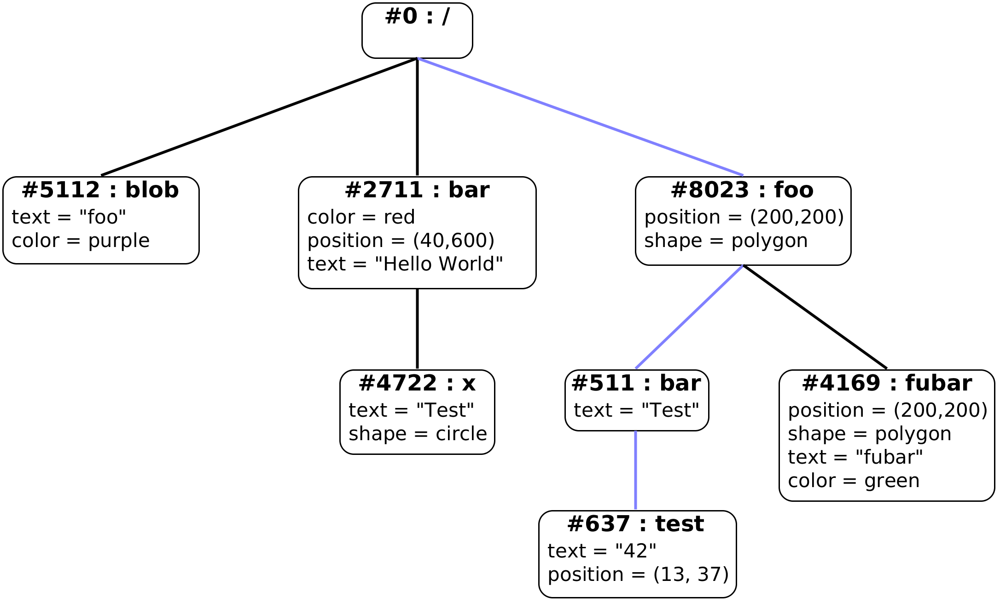
Beispiel: /foo/bar/test
Bildung einer geschlossenen Umgebung, um eine Menge von Entitäten und Komponenten abzugrenzen, sodass eine unabhängige Koexistenz mehrerer dieser Umgebungen in einer Anwendung möglich ist.
Bereitstellung geeigneter Schnittstellen und Strukturen, um Ereignisse zu definieren, auszulösen und zu verarbeiten.
Bereitstellung geeigneter Schnittstellen und Strukturen, um Komponenten zu erzeugen, abzufragen, zu verarbeiten und zu löschen.
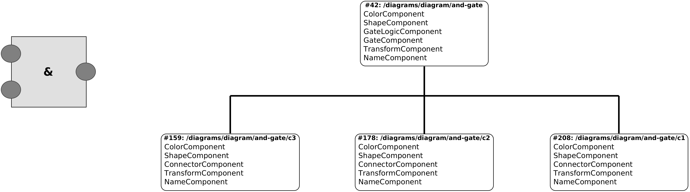
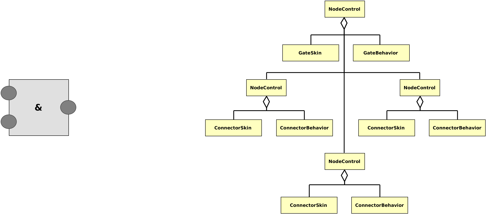
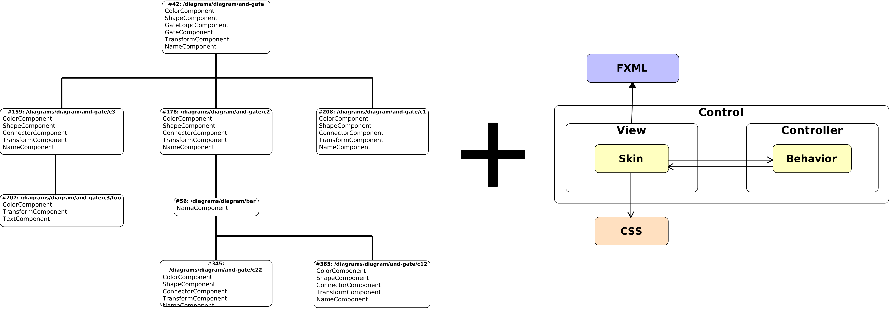
Use a spacebar or arrow keys to navigate